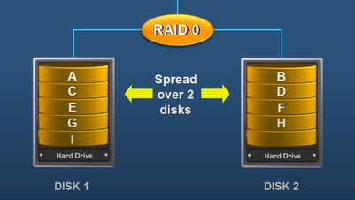
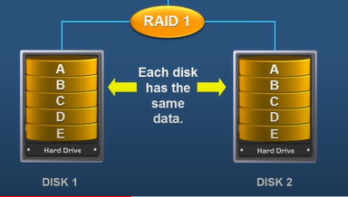
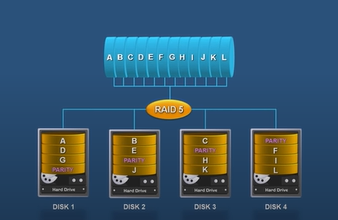
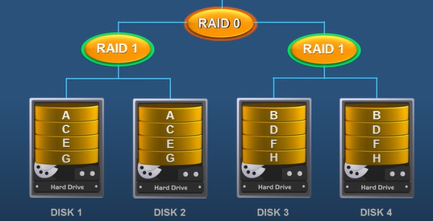

RAID
RAID (Redundant Array of Independent Disks) is a data storage virtualization technology uses multiple disks in order to provide fault tolerance, to improve overall performance. With RAID technology, data can be mirrored on one or more disks in the same array, so that if one disk fails, the data is preserved. RAID should not be confused with data backup.
RAID Levels
Raid-0 – Striping
- Data is striped across multiple disk.
- It is not fault tolerance.
- Advantage is speed.

Raid-1 – Mirroring
- Data is copied on more than one disk.
- Fault tolerant.
- Can’t achieve speed.

Raid-5 – Striping with parity
- Data is striped across multiple disk along with parity.
- Must have at least 3 disk.
- The equivalent of an entire disk is used to store parity.

Raid-10 – Striping + Mirroring
- Combine RAID-0 and RAID-1.
- Benefit from the fault tolerance of RAID 1 and the speed of RAID 0.
- can only use 50% for the data storage.

Pratik Gautam pratikgautm@gmail.com